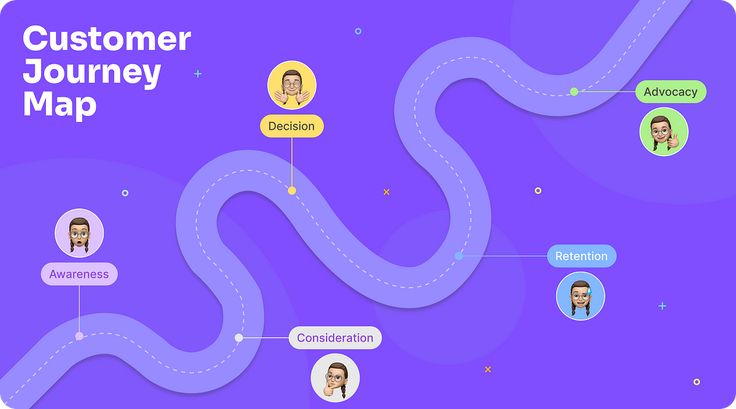

Why Your Business Isn't Showing Up Online (Even Though You Have a Facebook Page)
Many business owners believe that having a Facebook page means they have an online presence. Unfortunately, that's no longer enough.
Customers don't discover businesses the way they did five years ago. Today, people use Google, Google Maps, websites, reviews, and social media together before deciding where to spend their money.
If you've ever wondered why your business isn't showing up online despite being active on social media, you're not alone. The good news is that the problem is usually easier to fix than most people think.
Being online isn't the same thing as being visible online.
The businesses getting customers consistently are not always the biggest businesses. They're simply the easiest to find when people are searching.
Customers Start With Google, Not Facebook
Think about the last time you needed a restaurant, hotel, school, mechanic, salon, or fashion designer.
Chances are you opened Google first.
Most customers search things like:
- Best schools near me
- Hotels in Eket
- Fashion designer near me
- Event planner in Akwa Ibom
- Affordable website designer
If your business doesn't appear when those searches happen, customers never get the chance to choose you.
Instead, they choose whoever appears first.
A Facebook Page Is Not a Digital Strategy
Social media is important.
It helps you engage customers, build relationships, and showcase your work.
But social media platforms are designed to keep users scrolling inside the platform. Their goal isn't necessarily to help people discover your business.
Algorithms change constantly. Reach drops unexpectedly. Posts disappear from timelines.
A customer who doesn't already follow your page may never see your content.
That's why relying solely on Facebook or Instagram limits your visibility.
Your Website Is Your Digital Headquarters
Unlike social media, your website belongs to you.
It acts as your online headquarters where customers can learn about your business without distractions.
A professional website helps customers:
- Understand what you do
- See your services
- View testimonials
- Contact you easily
- Trust your business
More importantly, Google understands websites far better than social media profiles.
A properly optimized website gives your business the opportunity to appear in search results when customers need your services.

Google Business Profile Is One of the Most Powerful Free Tools Available
One of the biggest mistakes local businesses make is ignoring their Google Business Profile.
When someone searches for businesses near them, Google often displays local listings before websites.
A complete profile helps customers:
- Find your location
- Call your business
- Read reviews
- View photos
- Visit your website
Businesses with optimized profiles are often far more visible than competitors who haven't taken the time to set theirs up properly.
Trust Signals Matter More Than Ever
Before customers spend money, they look for proof.
They want to see reviews, testimonials, photos, and evidence that your business is legitimate.
Imagine two businesses offering the same service.
One has:
- A professional website
- Customer reviews
- Updated business information
- Professional branding
The other only has a Facebook page with occasional posts.
Which one would you trust?
Most customers make the same decision.
Visibility Comes Before Sales
Many business owners focus on getting more customers.
But the first question should be:
Can customers find your business in the first place?
If people don't know your business exists, they can't become customers.
Visibility is often the missing link between having a great product and generating consistent sales.
How to Improve Your Online Visibility
Start with these practical steps:
- Create a professional website.
- Set up and optimize your Google Business Profile.
- Keep your business information consistent everywhere online.
- Collect reviews from satisfied customers.
- Publish useful content regularly.
- Use social media to support your website, not replace it.
These actions help search engines understand your business and help customers trust you faster.
Final Thoughts
The internet has changed how people buy.
Customers now research businesses before making contact. If your business isn't showing up online when that research happens, opportunities are being lost every day.
The good news is that visibility can be improved.
With the right digital foundation, any business can become easier to find, easier to trust, and easier to choose.